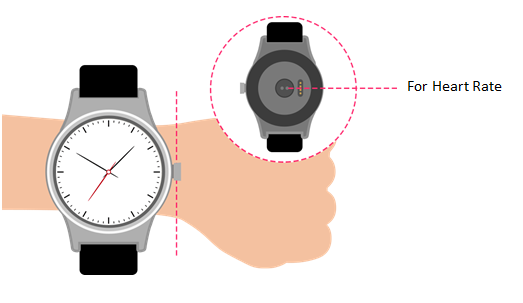

FAQ pour la montre Wi-Fi
Que faire si ma WATCH ne reçoit pas les appels et ne compose pas ?
- Vérifiez que la connexion entre la WATCH et votre appareil s’établit normalement.
- Assurez-vous que votre WATCH n’est pas trop éloignée de l’appareil.
- Vérifiez que vous avez autorisé la connexion pour passer des appels, qu’une icône Bluetooth
 est présente sur votre appareil après confirmation. Vous pouvez ensuite composer et recevoir des appels.
est présente sur votre appareil après confirmation. Vous pouvez ensuite composer et recevoir des appels.

Comment obtenir les mesures les plus exactes possibles du rythme cardiaque ?
Pour bénéficier des mesures les plus exactes possibles, serrez bien la WATCH autour du poignet. Même dans des conditions idéales, il se peut que la WATCH ne soit pas en mesure d’obtenir une lecture fiable du rythme
cardiaque pour tout le monde. Pour un pourcentage réduit d’utilisateurs, divers facteurs contribuent à l’impossibilité de la bonne lecture du rythme cardiaque. Deux choses peuvent aider la WATCH à obtenir
les lectures du rythme cardiaque les plus cohérentes et les plus fines possibles :
- L’arrière de la WATCH doit bien être en contact avec la peau.
- La WATCH doit être bien serrée autour du poignet mais gardez de l’espace pour que la peau respire et que les capteurs puissent assurer leur fonction.
- Vous pouvez serrer un peu plus votre WATCH pour les entraînements et la desserrer après.
- Les capteurs ne fonctionnent que si vous portez la WATCH en haut du poignet.
Si votre WATCH ne reste pas en place ou si votre rythme cardiaque ne peut pas être mesuré, serrez un peu le bracelet. Votre WATCH doit être serrée mais de façon confortable.

Que faire si la WATCH ne répond pas ?
Maintenez la touche Marche/Arrêt enfoncée pendant environ 8 secondes pour redémarrer la WATCH. Ne procéder que s’il n’y a pas d’autre moyen.
Pourquoi la WATCH vibre-t-elle parfois de façon inattendue ?
- Vérifiez si vous n’avez pas reçu de notification.
- Assurez-vous que votre WATCH n’est pas trop éloignée de l’appareil.
Que faire si le vibreur ne fonctionne pas ?
- Rechargez la batterie puis assurez-vous qu’elle alimente bien la montre.
- Vérifiez que la connexion entre la WATCH et votre appareil n’est pas interrompue.
Que faire si la WATCH ne se recharge pas ?
- Assurez-vous que les broches de la base sont alignées sur celles au dos de votre Watch.
- Assurez-vous que le câble USB est fermement branché sur le port USB.
- Parfois, si la batterie de votre WATCH est entièrement vide, elle a besoin de temps pour s’activer et activer son système.
Pourquoi la consommation de la batterie augmente-t-elle après l’installation de l’application MOVETIME et la connexion de la WATCH à mon appareil ?
C’est tout à fait normal, car la consommation inclut :
- le maintien de la connexion entre votre WATCH et l’appareil,
- le transfert de fichiers entre votre WATCH et l’appareil ;
- la déconnexion, la recherche d’appareils et la reconnexion.
Combien d’appareils BLE (BT 4.0 Low Energy) est-il possible de connecter à mon appareil simultanément ?
Seul 1 appareil BLE peut être simultanément connecté à votre appareil.
Que faire si la WATCH se déconnecte souvent de mon appareil ?
- Assurez-vous que l’application MOVETIME n’est pas arrêtée par un outil système. Si elle est arrêtée, redémarrez l’application.
- Assurez-vous que la transmission entre la WATCH et votre appareil est normale.
a) Vérifiez l’application MOVETIME sur votre téléphone. Si votre WATCH se connecte à l’appareil, une icône
 s’affiche dans le coin supérieur droit. Si la WATCH ne parvient pas à se connecter, l’icône
s’affiche dans le coin supérieur droit. Si la WATCH ne parvient pas à se connecter, l’icône
 change en
change en
 .
.

b) Si l’icône Bluetooth
 est affichée sur votre WATCH, cela signifie que votre WATCH n’a pas pu s’appairer avec l’appareil.
est affichée sur votre WATCH, cela signifie que votre WATCH n’a pas pu s’appairer avec l’appareil.
Comment rétablir les paramètres d’usine de la WATCH ?
- Si aucune des réponses ci-dessus ne parvient à résoudre votre problème, vous pouvez réinitialiser votre WATCH.
- Dans l’application MOVETIME, appuyez sur
 , puis sur Watch->Paramètres->Rétablir les paramètres d’usine, puis réinitialisez votre WATCH.
, puis sur Watch->Paramètres->Rétablir les paramètres d’usine, puis réinitialisez votre WATCH.
- Maintenez la touche Marche/Arrêt enfoncée pendant environ 10 secondes pour réinitialiser votre WATCH.